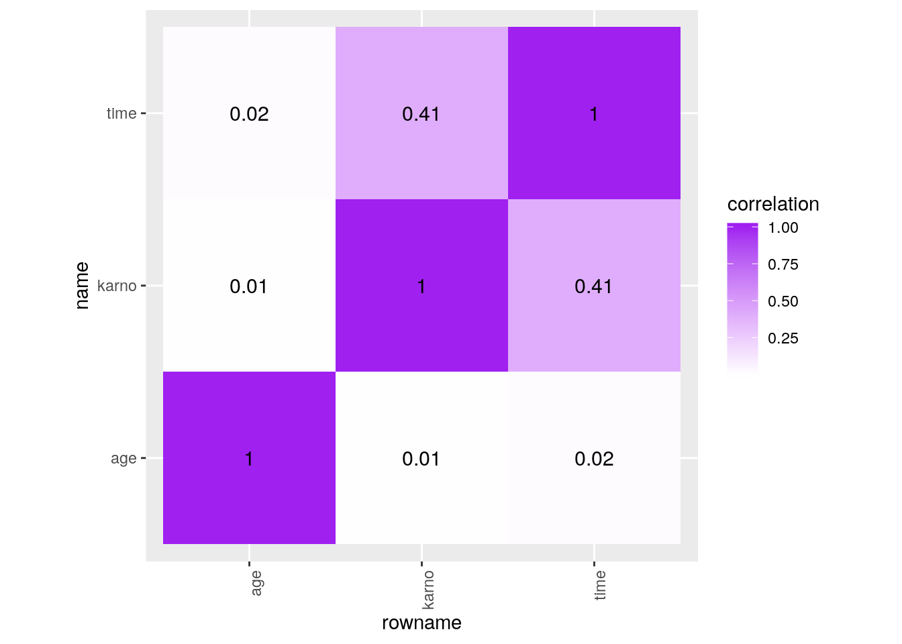
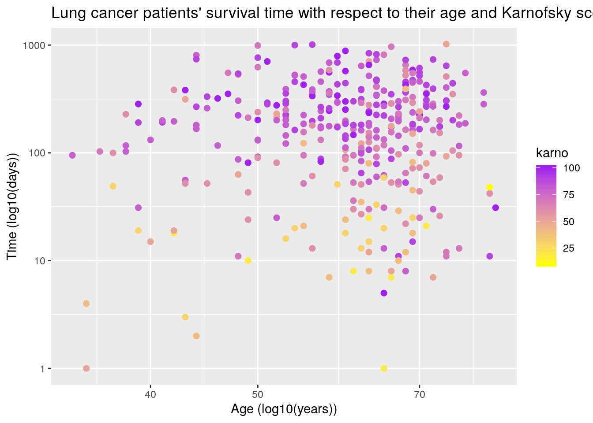
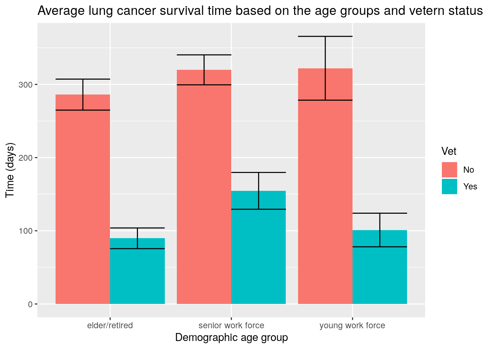
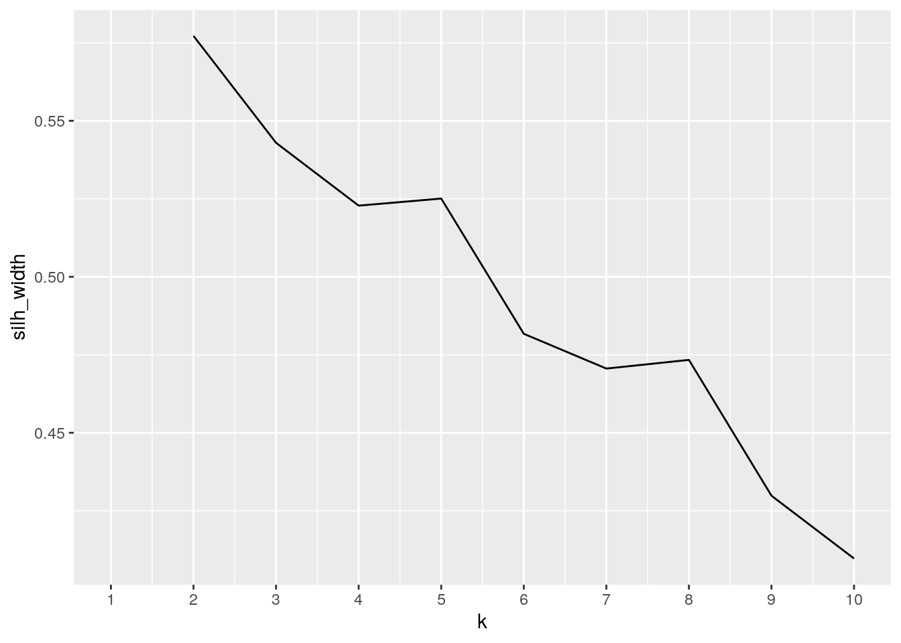
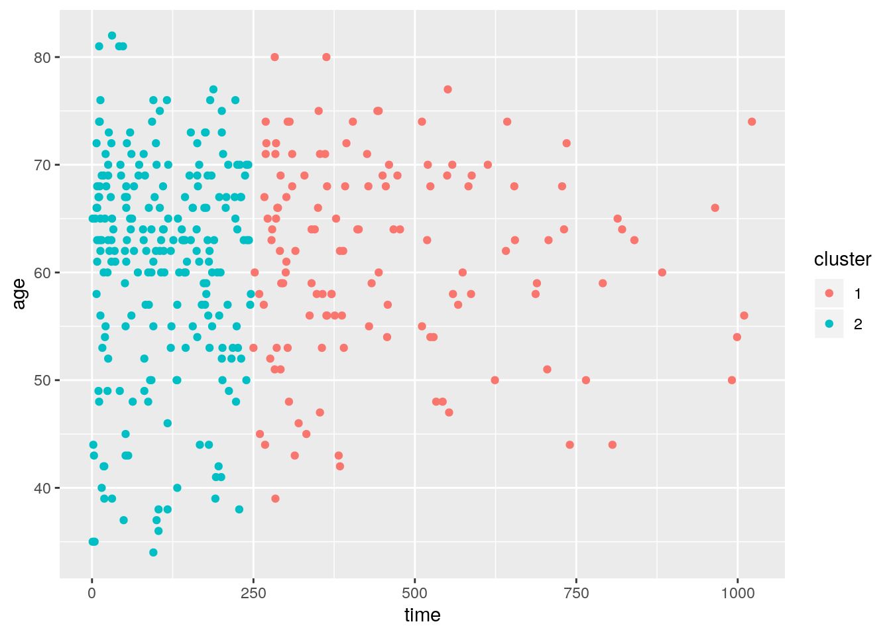
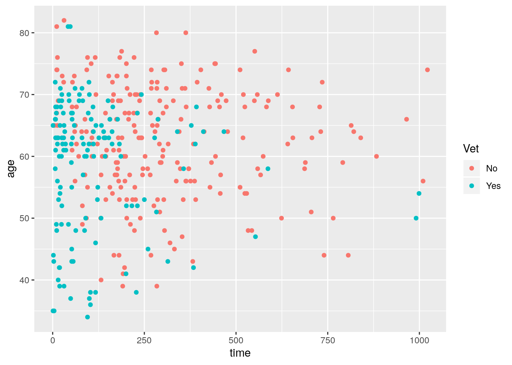

output: pdf_document: default html_document: default —
library(dplyr)
library(ggplot2)
library(survival)
library(tidyverse)
library(cluster)
# the two datasets I used for this project
`?`(cancer)
`?`(veteran)# untidy my datasets then tidy it up
cancer %>% pivot_wider(names_from = "status", values_from = "status") %>%
# untidy the dataset by breaking by 'status' column into two
# columns
pivot_longer(c("2", "1"), names_to = "status")## # A tibble: 456 x 11
## inst time age sex ph.ecog ph.karno pat.karno meal.cal wt.loss status
## <dbl> <dbl> <dbl> <dbl> <dbl> <dbl> <dbl> <dbl> <dbl> <chr>
## 1 3 306 74 1 1 90 100 1175 NA 2
## 2 3 306 74 1 1 90 100 1175 NA 1
## 3 3 455 68 1 0 90 90 1225 15 2
## 4 3 455 68 1 0 90 90 1225 15 1
## 5 3 1010 56 1 0 90 90 NA 15 2
## 6 3 1010 56 1 0 90 90 NA 15 1
## 7 5 210 57 1 1 90 60 1150 11 2
## 8 5 210 57 1 1 90 60 1150 11 1
## 9 1 883 60 1 0 100 90 NA 0 2
## 10 1 883 60 1 0 100 90 NA 0 1
## # … with 446 more rows, and 1 more variable: value <dbl># tidy up the dataset by combining '2' and '1' columns back
# into one column 'status'
veteran %>% pivot_wider(names_from = "trt", values_from = "trt") %>%
# untidy the dataset by breaking by 'trt' column into two
# columns
pivot_longer(c("1", "2"), names_to = "trt")## # A tibble: 274 x 9
## celltype time status karno diagtime age prior trt value
## <fct> <dbl> <dbl> <dbl> <dbl> <dbl> <dbl> <chr> <dbl>
## 1 squamous 72 1 60 7 69 0 1 1
## 2 squamous 72 1 60 7 69 0 2 NA
## 3 squamous 411 1 70 5 64 10 1 1
## 4 squamous 411 1 70 5 64 10 2 NA
## 5 squamous 228 1 60 3 38 0 1 1
## 6 squamous 228 1 60 3 38 0 2 NA
## 7 squamous 126 1 60 9 63 10 1 1
## 8 squamous 126 1 60 9 63 10 2 NA
## 9 squamous 118 1 70 11 65 10 1 1
## 10 squamous 118 1 70 11 65 10 2 NA
## # … with 264 more rows# tidy up the dataset by combining '1' and '2' columns back
# into one column 'trt'
# manipulate cancer dataset to recode status column and add a
# column indicating the patients are not veteran.
LungCancer <- cancer %>% mutate(status = recode(status, `2` = "dead",
`1` = "censored")) %>% rename(karno = "ph.karno") %>% mutate(Vet = recode(status,
dead = "No", censored = "No"))
# manipulate veteran dataset to recode status column and add
# a column indicating the patients are veterans.
VeteranLung <- veteran %>% mutate(status = recode(status, `1` = "dead",
`0` = "censored")) %>% mutate(Vet = recode(status, dead = "Yes",
censored = "Yes"))JoinedData <- LungCancer %>% full_join(VeteranLung, by = c("time",
"status", "age", "karno", "Vet"))
JoinedData## inst time status age sex ph.ecog karno pat.karno meal.cal wt.loss Vet trt
## 1 3 306 dead 74 1 1 90 100 1175 NA No NA
## 2 3 455 dead 68 1 0 90 90 1225 15 No NA
## 3 3 1010 censored 56 1 0 90 90 NA 15 No NA
## 4 5 210 dead 57 1 1 90 60 1150 11 No NA
## 5 1 883 dead 60 1 0 100 90 NA 0 No NA
## 6 12 1022 censored 74 1 1 50 80 513 0 No NA
## celltype diagtime prior
## 1 <NA> NA NA
## 2 <NA> NA NA
## 3 <NA> NA NA
## 4 <NA> NA NA
## 5 <NA> NA NA
## 6 <NA> NA NA
## [ reached getOption("max.print") -- omitted 359 rows ]TidyJoined <- JoinedData %>% select(time, status, age, karno,
Vet)
TidyJoined## time status age karno Vet
## 1 306 dead 74 90 No
## 2 455 dead 68 90 No
## 3 1010 censored 56 90 No
## 4 210 dead 57 90 No
## 5 883 dead 60 100 No
## 6 1022 censored 74 50 No
## 7 310 dead 68 70 No
## 8 361 dead 71 60 No
## 9 218 dead 53 70 No
## 10 166 dead 61 70 No
## 11 170 dead 57 80 No
## 12 654 dead 68 70 No
## 13 728 dead 68 90 No
## 14 71 dead 60 60 No
## 15 567 dead 57 80 No
## 16 144 dead 67 80 No
## 17 613 dead 70 90 No
## 18 707 dead 63 50 No
## 19 61 dead 56 60 No
## 20 88 dead 57 90 No
## [ reached getOption("max.print") -- omitted 345 rows ]Data <- TidyJoined %>% mutate(Age_Group = case_when(age >= 65 ~
"elder/retired", 50 <= age & age < 65 ~ "senior work force",
age < 50 ~ "young work force"))Data %>% group_by(Age_Group) %>% summarize(mean_karno = mean(karno,
na.rm = T), sd_karno = sd(karno, na.rm = T), n = n(), se_karno = sd_karno/sqrt(n))## # A tibble: 3 x 5
## Age_Group mean_karno sd_karno n se_karno
## <chr> <dbl> <dbl> <int> <dbl>
## 1 elder/retired 71.7 18.6 144 1.55
## 2 senior work force 75.4 19.1 170 1.46
## 3 young work force 69.6 21.5 51 3.02Data %>% group_by(Vet) %>% summarize(mean_karno = mean(karno,
na.rm = T), sd_karno = sd(karno, na.rm = T), n = n(), se_karno = sd_karno/sqrt(n))## # A tibble: 2 x 5
## Vet mean_karno sd_karno n se_karno
## <chr> <dbl> <dbl> <int> <dbl>
## 1 No 81.9 12.3 228 0.816
## 2 Yes 58.6 20.0 137 1.71Data %>% group_by(status, Vet) %>% summarize(count = n())## # A tibble: 4 x 3
## # Groups: status [2]
## status Vet count
## <chr> <chr> <int>
## 1 censored No 63
## 2 censored Yes 9
## 3 dead No 165
## 4 dead Yes 128Data %>% filter(status == "dead") %>% group_by(Vet) %>% summarize(mean(time))## # A tibble: 2 x 2
## Vet `mean(time)`
## <chr> <dbl>
## 1 No 283
## 2 Yes 122.Data %>% filter(status == "censored") %>% group_by(Vet) %>% summarize(mean(time))## # A tibble: 2 x 2
## Vet `mean(time)`
## <chr> <dbl>
## 1 No 363.
## 2 Yes 115.Data %>% group_by(Vet) %>% summarize(Avg_age = mean(age))## # A tibble: 2 x 2
## Vet Avg_age
## <chr> <dbl>
## 1 No 62.4
## 2 Yes 58.3Data %>% filter(status == "dead") %>% select(time, karno, age) %>%
arrange(desc(time))## time karno age
## 1 999 90 54
## 2 991 70 50
## 3 883 100 60
## 4 814 70 65
## 5 791 100 59
## 6 765 90 50
## 7 735 90 72
## 8 731 80 64
## 9 728 90 68
## 10 707 50 63
## 11 705 100 51
## 12 689 90 59
## 13 687 80 58
## 14 655 100 63
## 15 654 70 68
## 16 643 90 74
## 17 641 80 62
## 18 624 70 50
## 19 613 90 70
## 20 587 60 58
## 21 583 60 68
## 22 574 100 60
## 23 567 80 57
## 24 558 90 70
## 25 553 70 47
## 26 550 70 69
## 27 533 60 48
## 28 524 80 54
## 29 524 60 68
## 30 520 90 70
## 31 519 80 63
## 32 477 90 64
## 33 473 90 69
## [ reached getOption("max.print") -- omitted 260 rows ]Data %>% select_if(is.numeric) %>% na.omit %>% cor## time age karno
## time 1.00000000 0.020939048 0.410329335
## age 0.02093905 1.000000000 0.005707318
## karno 0.41032933 0.005707318 1.000000000CorHeat <- Data %>% select_if(is.numeric) %>% na.omit %>% cor() %>%
as.data.frame %>% rownames_to_column %>% pivot_longer(-1,
names_to = "name", values_to = "correlation")
CorHeat## # A tibble: 9 x 3
## rowname name correlation
## <chr> <chr> <dbl>
## 1 time time 1
## 2 time age 0.0209
## 3 time karno 0.410
## 4 age time 0.0209
## 5 age age 1
## 6 age karno 0.00571
## 7 karno time 0.410
## 8 karno age 0.00571
## 9 karno karno 1CorHeat %>% ggplot(aes(rowname, name, fill = correlation)) +
geom_tile() + scale_fill_gradient2(low = "grey", mid = "white",
high = "purple") + geom_text(aes(label = round(correlation,
2)), color = "black", size = 4) + theme(axis.text.x = element_text(angle = 90,
hjust = 1)) + coord_fixed()
ggplot(Data, aes(age, time)) + geom_point(size = 2, aes(color = karno)) +
scale_color_gradient(low = "yellow", high = "purple") + scale_x_log10() +
scale_y_log10() + ggtitle("Lung cancer patients' survival time with respect to their age and Karnofsky score") +
ylab("Time (log10(days))") + xlab("Age (log10(years))") #####this scatter plot shows that patients with higher physician rated karno score(dark purple dots, representing karno score from 75 and above) survive for a longer time than other patient regardless of their cancer onset age. patients with medium physician rated karno score(light purple dots and all kinds of yellow-ish dots, representing karno score below 75) has a pretty positive correlation between onset age and survival time. patient with older cancer onset age usually survive longer times.
Data %>% ggplot(aes(x = Age_Group, y = time, fill = Vet)) + geom_bar(position = "dodge",
stat = "summary", fun.y = "mean") + geom_errorbar(position = "dodge",
stat = "summary") + ggtitle("Average lung cancer survival time based on the age groups and vetern status") +
ylab("Time (days)") + xlab("Demographic age group") #####this bar graph shows that out of all three working demographic age groups, veteran patients always have a much lower survial times comparing to the non-veteran patients. as we can observed that the green bars(veteran) is much lower than the orange bars(non-veteran) in survival time across all three groups.
silh_width <- vector()
for (i in 1:10) {
pam_fit <- Data %>% select_if(is.numeric) %>% pam(i)
silh_width[i] <- pam_fit$silinfo$avg.width
}
ggplot() + geom_line(aes(x = 1:10, y = silh_width)) + scale_x_continuous(name = "k",
breaks = 1:10)
pam1 <- Data %>% select_if(is.numeric) %>% pam(2)
pam1$silinfo$avg.width## [1] 0.5772119clust_data <- Data %>% select_if(is.numeric)
pam <- clust_data %>% pam(k = 2)
pamclust <- clust_data %>% mutate(cluster = as.factor(pam$clustering))
pamclust %>% ggplot(aes(time, age, color = cluster)) + geom_point()
pamclust %>% group_by(cluster) %>% summarize_if(is.numeric, mean,
na.rm = T)## # A tibble: 2 x 4
## cluster time age karno
## <fct> <dbl> <dbl> <dbl>
## 1 1 458. 61.4 82.9
## 2 2 109. 60.6 67.5# this line shows the average of all three variable in the
# two clusters
Data %>% ggplot(aes(time, age, color = Vet)) + geom_point() #####comparing the cluster plot with the scatter plot colored by veteran, it seems like two clusters capture the difference in survival time and onset age between veteran and non-veteran lung cancer patients fairly well. all of the blue dots in clustered plot are near the left side of the graph, suggesting shorter survival time for the blue dots. when compared this to the scatter plot color by veteran, I can see that most of the veteran patients (blue dots) is mostly gathered toward the left side of the graph, representing shorter survival time. this result corresond fairly well to the clustering analysis graph of two clusters.